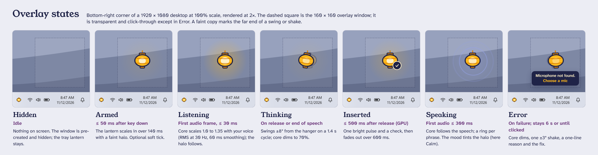
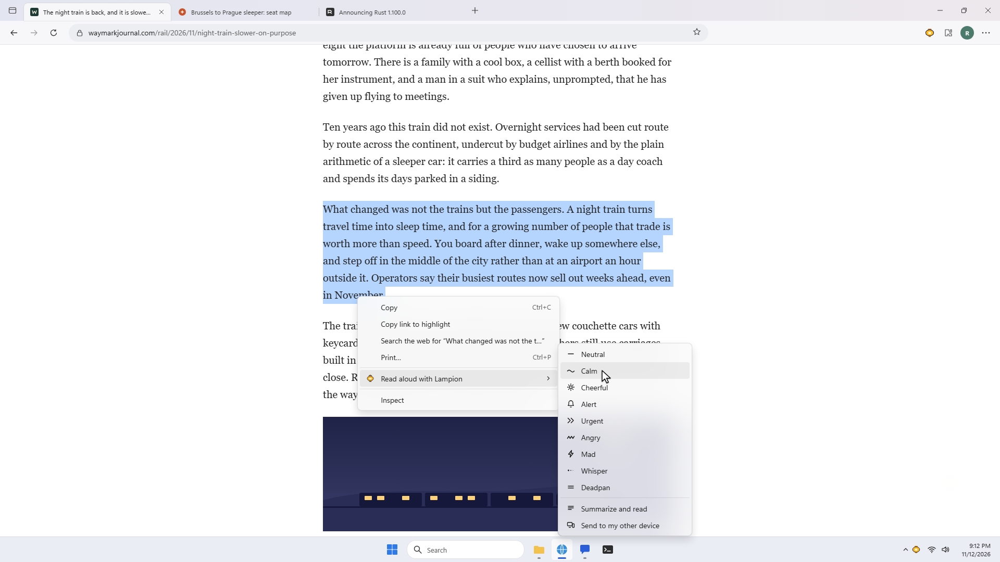
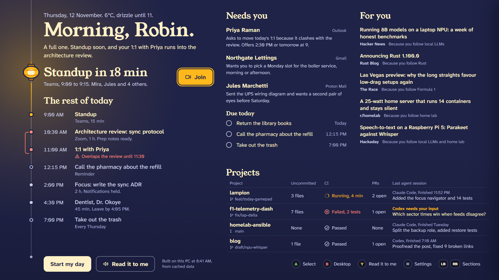

Lampion artboards
Three surfaces where the assistant meets you: the corner light while you dictate, the read-aloud menu in your browser, and the Today screen at sign-in. Every artboard is live; open it and use it.
Three surfaces where the assistant meets you: the corner light while you dictate, the read-aloud menu in your browser, and the Today screen at sign-in. Every artboard is live; open it and use it.

The lantern is the whole interface while you dictate, so it has to explain itself in the corner of your eye: it scales in when you press the key, brightens with your voice, swings while it thinks, and gives one bright pulse when the text lands at your caret. It never takes focus and shows no text, except a one-line reason when something is wrong. At idle the corner stays empty, and only the tray lantern flickers when you type.
Hold Right Ctrl (or Space) to dictate into the chat box. The strip below the screen triggers the speaking moods, the microphone error, reduced motion and your real microphone.

The menu belongs to the browser, so it looks like Chromium on Windows 11 and Lampion adds one entry with its mark. Moods are a submenu because most people pick one once and keep it. While Lampion reads, a reading pill sits beside the lantern, and the sentence being read is lit in Paper on the page, so you can follow along or look away.
Select any text and right-click, then pick a mood. The preview speaks with your browser's voice and fakes moods with rate and pitch; the real product uses Lampion's local expressive voice.

Today is a single evening scene rather than a grid of cards. The day hangs on a string, the lantern hangs at now, and its light falls on the greeting and the next thing you need to do. The further a thing is from now, the further it sits from the light. The other columns stay quiet, and Projects is a real table because those rows are meant to be compared.
Move with the arrows, Tab, the mouse or a controller (D-pad or stick, A to select, B for the desktop, Y to read it to you, Menu for settings, LB and RB to jump between sections).